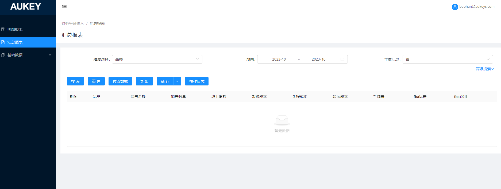
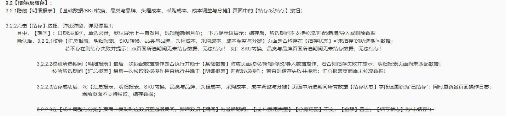

按钮控制说明：
1.【拉取数据】按钮：
1. 1按不同维度拉取汇总数据时，数据库汇总值均保留最多6位小数（前端展示2位小数）；
1.2本页、全部合计，将合计后的值保留两位小数进行展示；
2. 【导出】按钮：按数据库实际保留位数导出；
3.【结存】按钮：（红字为修改部分）
1.校验所选期间【明细报表】最后一次匹配SKU操作是否执行并晚于【基础数据/SKU转换】拉取/新增/修改/导入数据操作，若否则结存失败并提示：明细报表页面尚未匹配SKU数据！
校验所选期间【明细报表】最后一次匹配品类品牌操作是否执行并晚于【基础数据/品类与品牌】拉取/新增/修改/导入数据操作，若否则结存失败并提示：明细报表页面尚未匹配品类品牌数据！
校验所选期间【明细报表】最后一次匹配头程成本操作是否执行并晚于【基础数据/头程成本】拉取/新增/修改/导入数据操作，若否则结存失败并提示：明细报表页面尚未匹配头程成本数据！
校验所选期间【明细报表】最后一次匹配采购成本操作是否执行并晚于【基础数据/采购成本】拉取/新增/修改/导入数据操作，若否则结存失败并提示：明细报表页面尚未匹配采购成本数据！
校验所选期间【明细报表】最后一次成本调整与分摊操作是否执行并晚于【基础数据/成本调整与分摊】拉取/新增/修改/导入数据操作，若否则结存失败并提示：明细报表页面尚未进行成本调整与分摊！
2.校验所选期间【明细报表】最后一次匹配品类品牌、头程成本以及采购成本操作是否晚于匹配SKU操作，若否则结存失败并给出相应提示同上；
校验所选期间【明细报表】最后一次成本调整与分摊操作是否晚于头程成本、采购成本操作，若否则结存失败并给出相应提示同上；
